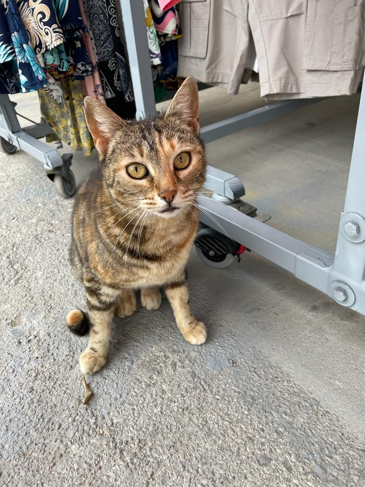
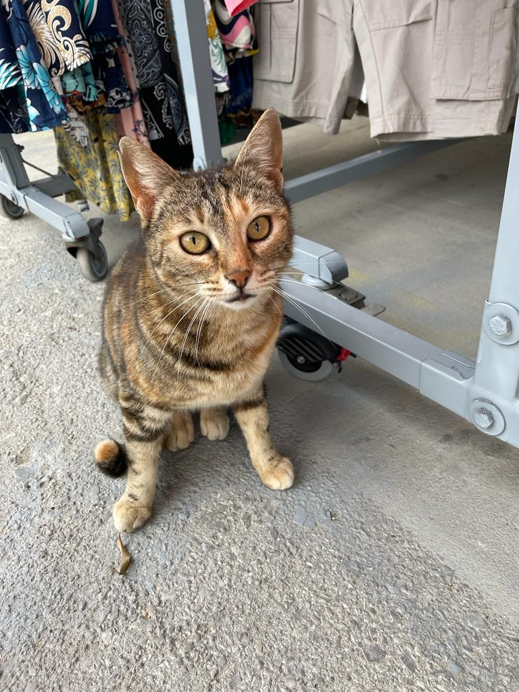

Accomodation
Theotokopoulou 9
Itinerary
1st of July - 8th of July
Day 1 (01/07/2023)
Laura and Brendie land at 20:00
Day 3 (03/07/2023)
Breakfast at Mosaiko Cafe Bistrot
Stroll around the city center of Heraklion
Get ice cream and walk to the Rocca a Mare Fortress
Dinner at Erganos
Day 4 (04/07/2023)
Brendie's presentation
Day 5 (05/07/2023)
Brendie's presentation
Day 6 (06/07/2023)
Breakfast at home
Drive 50 minutes to Bali and spend the morning here
Drive 30 minutes to Agia Pelagia and have lunch at one of the tavernas
Chill on the beach then drive 30 minutes back home
Dinner at The cafe of Kagiampi
Day 7 (07/07/2023)
Breakfast at home and pack lunch
Drive 1 hour to Plaka and take ferry to Spinalonga
Wander around for 1-2 hours
Drive 20 minutes to Cretan Olive Oil Farm
Day 8 (08/07/2023)
Go to farmers market and have breakfast there
Drive 1 hour to Matala
 
